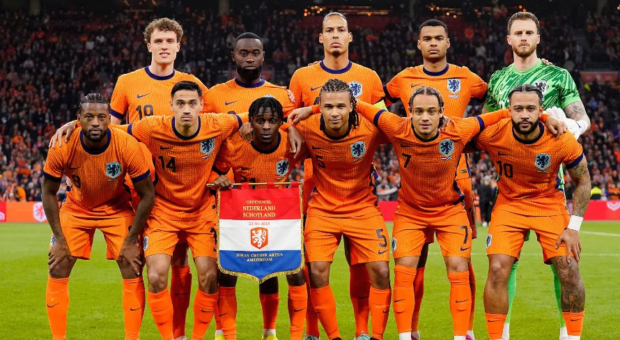

Seleção Holandesa na UEFA Eurocopa
A Laranja Mecanica vem a Euro em busca do bicampeonato, após ter vencido em 1988. A Holanda ou Países Baixos vem de uma ótima geração, após anos em baixa. Os jogadores Virgil Van Dijk, Xavi Simmons, Memphis Depay e Cody Gakpo possuem a missão de "fazer bonito" na competição.
